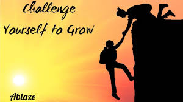
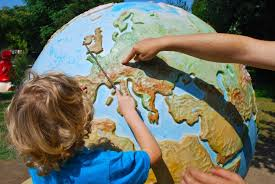
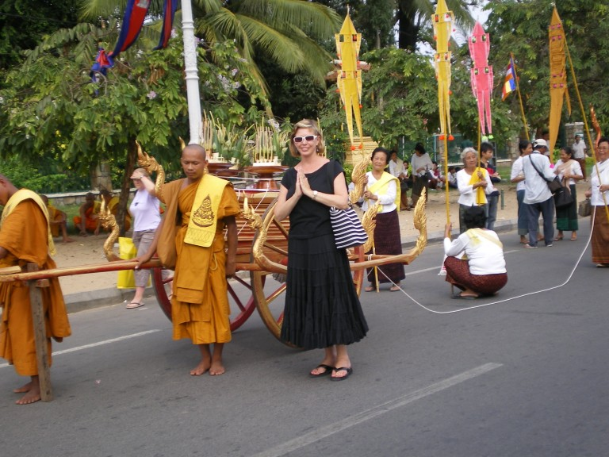
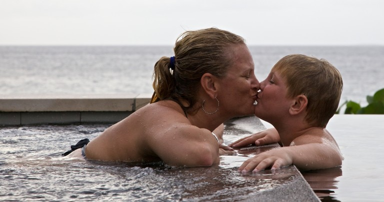
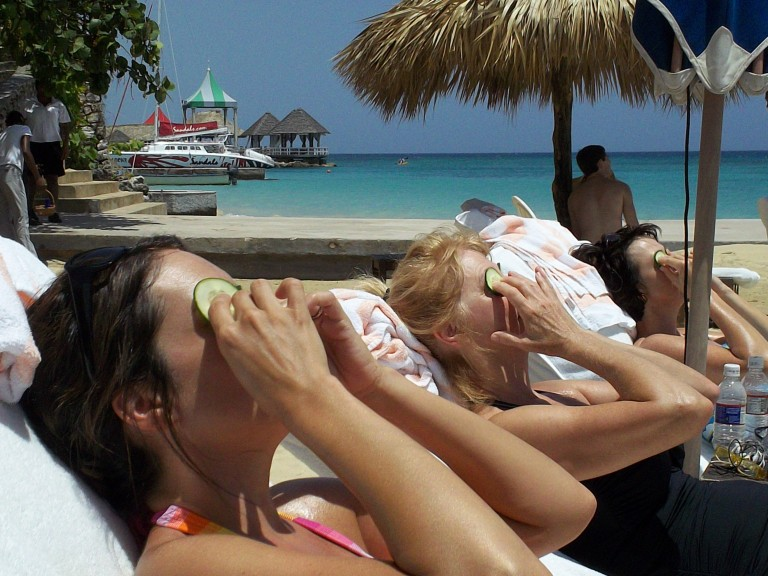

Why do people leave their homes and voyage all over the globe? The reasons why people love to travel are varied. They’re also very personal. Take a look at these 5 motivations, and see which ones ring true for you.
Reasons Why We Love Travelling

You might feel like you’re stuck in a rut in your daily life. Or you’re yearning for something exciting and different. You’re craving new experiences and new challenges. Travel is the ideal place to test yourself. It pushes people to their limits and gets them outside their comfort zone.
You’ll discover how resourceful you are when you’re exposed to new places, people and experiences. Maybe it’s finding your way around a busy city. Or ordering a meal when you don’t speak the language. Or zip-lining.
You’ll feel pride when you finish your trip successfully. Overcoming challenges will bring you joy and energy for future tests. You’ll realize how capable you are and build your confidence.

Learning is a strong reason why people love to travel. They want to experience something unfamiliar and leave with new skills or knowledge.
Seeing the world is more educational than a high school or college class. This condensed crash course in discovering how the rest of the world lives actually will cover subjects like history, geography and sociology. Every destination has something unique to teach visitors, and immersing themselves in a completely different world is the best learning experience.
People may travel to learn something specific: a new language, a new cuisine, aspects of a different culture, or a deeper appreciation of faith or spirituality. As a bonus, they’ll take away more than their specific goal. They’ll discover totally different ways of doing things. They’ll also gain awareness of new customs, cultures, people and places.
And because you’re actually experiencing this learning in real life, not reading it in a textbook, it will stay with you for a long time. You’ll gain a deep sense of satisfaction with the new skills you’ve learned – and new insights you’ve gained.

Another reason why people love to travel: it helps open your mind. You realize that there’s no one way to live life. Meeting people from other places will show you that your world view isn’t the same as everyone else’s.
You can’t imagine how different life is in another place until you see for yourself. Everything from work to family to beliefs to interests is not what you might expect from your own experience. The different setting will also help you discover and consider fresh ideas you hadn’t thought of before. You’ll come home with different notions and possibilities.
By being exposed to new places, people and cultures, you’ll develop a wider world view. And that will make you a better-rounded global citizen. It’s a great reward and big reason why people love to travel.

The shared experience of travel brings people together. A family getaway, a romantic trip, or long weekend with the girls or guys can strengthen important bonds.
Travel is a special way to deepen friendships as well. Whether it’s a quick ski break with co-workers or a week-long sun-and-sand getaway with your high school gang, travel will remind you why you became friends with them in the first place, and how good it is to spend focused time together.
Travel is also a great opportunity to make new friends – either fellow travelers or locals. Meeting and befriending new people is a valuable travel benefit. And once you’ve bonded, new possibilities for future travel unfold – either to visit them or journey with them.

A restful vacation is just what you need to renew yourself. In this year’s Virtuoso Luxe Report, 44 percent of respondents named this as a reason why people love to travel.
A relaxing natural setting and good weather are common ingredients for the R&R-focused trip. But everyone’s idea of the perfect rejuvenating vacation is different. One person might want to trek through a rainforest. Another may want to lie poolside at a Mexican resort. Yet another might opt for a wellness retreat in the mountains.
What should you do when you’re there? Nothing, really. Relax and be present in the moment. Let sensations like the lapping water and the warmth of the sun, along with the sound of waves, recharge your batteries. Live day to day: focus on where you want to go sightseeing (if you decide to leave the beach), what activities you want to pursue (if any), what you’re going to eat, what souvenirs you want to buy. Travel helps your mind and body reboot in a way you can’t achieve at home. In fact, 86 percent of people believe it improves their mood and outlook on life.